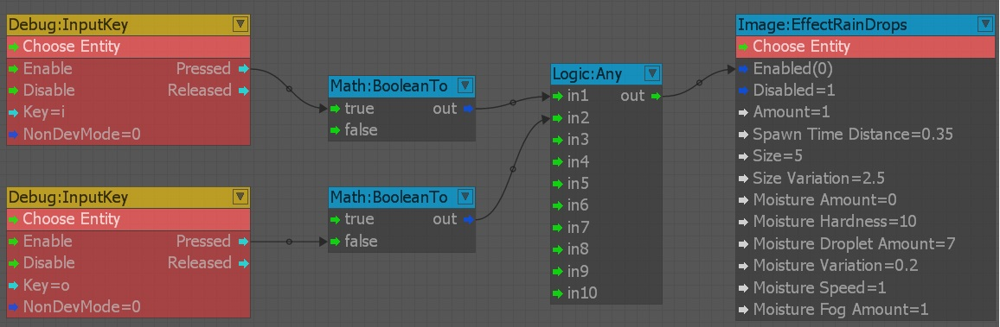
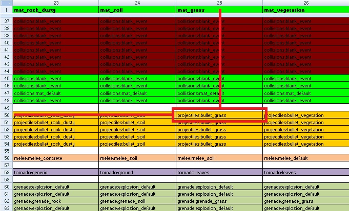
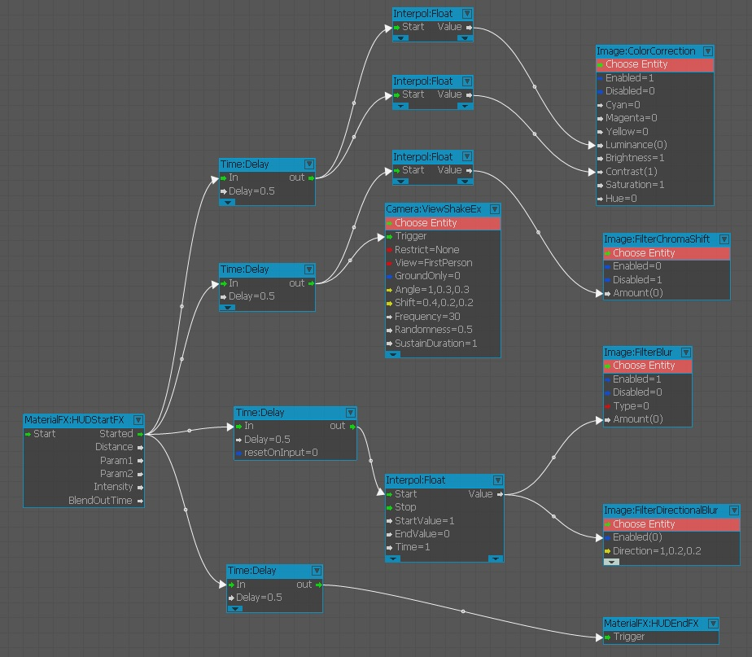
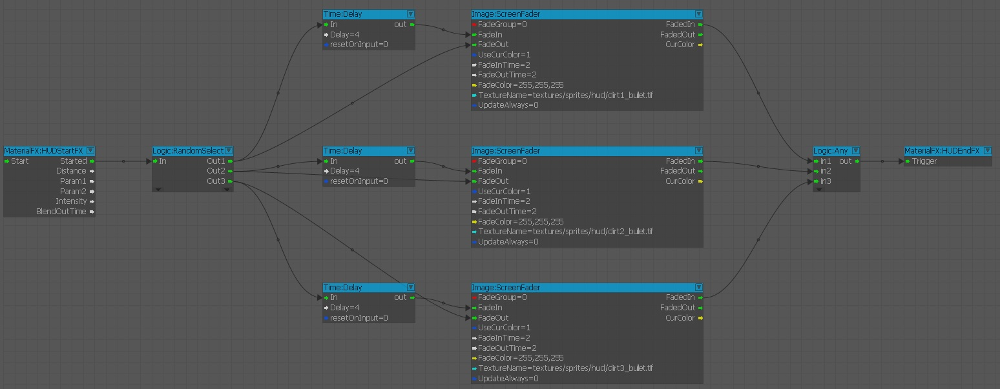

Overview
You can use the Flow Graph to create full screen effects. This section explains the nodes and functions for making these effects.
Make sure that the Advanced components are displayed in the Components list. You can set this option in the Flow Graph Editor's toolbar, under View -> Components.
Effect Nodes
Camera Nodes
You can find this option under context menu, Add Node -> Camera. These nodes can be used to make camera effects. For example, ViewShakeEx generates random shake animation of the camera. It is effective to connect with explosive effects.
- Trigger: Triggers the shake effect.
- Restrict: Sets a condition limit for the ViewShake. You can set the following options:
- None: No conditions applied.
- NoVehicle: Effect is applicable only if the player is outside a vehicle.
- VehicleOnly: Effect is applicable only if the player is inside a vehicle.
- View: Selects a camera to apply effect. It can be First Person for the Player or Current if you want to apply the effect for a track view sequence.
- GroundOnly: Applies the shake when the player is standing on a ground surface.
- Angle: Controls the angle of the camera shake movement.
- Shift: Controls the shift distance of the camera shake movement.
- Duration: Controls duration from start to end of the effect.
- Frequency: Controls frequency of the shake movement.
- Randomness: Controls the randomness of the shake movement.
- Distance: Distance at which the shake movement to happen. If an entity is asociated to the node, distance from that entity to the current camera will be used.
- RangeMin: Minimum strength effect range.
- RangeMax: Maximum strength effect range.
- SustainDuration: Total duration for the shake movement.
- FadeOutDuration: Total time for the shake to fade out (Seconds).
- Stop: Total time for the shake movement to stop.
- Preset: Preset input values. When this is used, all parameter inputs are ignored.
Image Nodes
You can find this option under context menu, Add Node -> Image. Image nodes are used to expose post process effects that can be used in a game play or for cut scenes purposes.
When using the image or camera nodes, it's not necessary to set an entity to the Image nodes; they will be automatically assigned to the local player. Even though most of the nodes have the enabled and disabled ports, it's safer to ignore the disabled input and use the enabled input and set it to be true or false. The inputs are also of the Boolean type and so it's always best to combine these nodes with the Math:BooleanTo node to be sure that the correct values are being sent to the image node.
Here is an example of a flow graph that turns on/off the rain drops full screen FX with input keys:
Pic1: A sample Flow Graph for rain drops effect. 
For more information on Image nodes, please refer: Image Nodes
MaterialFX Nodes
You can find this option under context menu, Add Node ->MaterialFX. You can use these nodes to implement full screen effect to the particle effect. These Material FX graphs, are called from the code.
For example:
- The dirt_bullet_hit graph gets called when the player shoots at a surface and the camera is also close to this surface.
- The blood_bullet_hit graph gets called when the player receives damage from an event in the game world. (Shot by AI, fall damage, and etc.)
Below is an example of the dirt_bullet_hit graph being called when the player shoots the ground with mat_grass assigned as a surface type.

- Through the Libs\MaterialEffects.xml file, we find the combination of pistolbullet vs mat_grass. (Row 50 Column 25).
- This points to the library Libs\MaterialEffects\FxLibs\projectiles.xml.
- And specifically the effect within the library: bullet_grass (which is shown below).
- At the bottom of the effect we find the Flowgraph link: <FlowGraph name="dirt_bullet_hit" maxdist="2"/>.
<Effect name="bullet_grass" delay="0.05">
<Audio trigger="Play_p_pro_impact_bullet_hit_mat_grass">
</Audio>
<RandEffect name="particles1">
<Particle>
<Name minscale="0.3" maxscale="1" maxscaledist="80">bullet.hit_grass.a</Name>
</Particle>
<Particle>
<Name minscale="0.4" maxscale="1.3" maxscaledist="80">bullet.hit_grass.b</Name>
</Particle>
<Particle>
<Name minscale="0.6" maxscale="1.2" maxscaledist="80">bullet.hit_grass.c</Name>
</Particle>
</RandEffect>
<RandEffect>
<Decal minscale="0.04" maxscale="0.06">
<Material>materials/decals/dirt/ground</Material>
</Decal>
</RandEffect>
<FlowGraph name="dirt_bullet_hit" maxdist="2"/>
</Effect>
The Material FX graph must contain the Start & End nodes to operate correctly. The logic within these 2 nodes is down to you.
HUDstartFX
Start of the full screen effect to be applied in the engine.
Input Port
- Start: Triggered automatically by the MaterialEffects systems.
Output Ports
- Started: Triggered when the effect is started.
- Distance: Distance to player.
- Param1-2: Custom float parameters which can be set in the XML description of the effect.
- Intensity: Total intensity of the effect. It is a Dynamic value (In range of 0.0 - 1.0).
- BlendOutTime: Total time required for to blend out FX effect (Seconds).
HUDEndFX
End of a full screen effect to the engine.
- Trigger: This port is triggered when the effect is finished. This must be done to notify that the effect can be re-used again.
Implementing full screen effect to the game
To implement a full screen effect into the game, you have to save the Flow Graph and call it in game. Make sure you set the following options in your Flow Graph:
- Make a Flow Graph for an Effect.
- Add a HUDStartFX and HUDEndFX node.
- Add a Delay node (Add Node->Time->Delay).
- Set the Delay value to minimum required duration to involve whole duration of the effect Flow Graph.
- Connect the Started port of the HUDStartFX to every starting point of every effect node, and the In port of the modified Delay node.
- Connect the Out of Delay node to the Trigger of the HUDEndFX node.
- Save the Flow Graph in
Libs/MaterialEffects/Flowgraphs. - If you use full screen effect as an impact effect of the bullet or explosion, rename the saved xml file's name (
/Effect/FlowGraph/name)to match the appropriate effect inLibs/MaterialEffects/FXLibs/bulletimpacts.xml. This xml file authorizes the required elements of the effect, such as particle effect, sound, or bullet decal.
Examples
For making a full screen effect Flow Graph, you must use few extra general nodes. Here are some examples:
Adjust timing, animate value
Pic2: An example Flow Graph of the impact effect of nuclear weapon. 
- Use a HUDStartFX and a HUDEndFX node, connected to a Delay node, so the effect lasts the whole duration of the Flow Graph.
- Use a Delay node just before the every effect nodes. This node is often used to adjust each node's activation timing.
- Use a Float node (Add Node/Interpol/Float) to animate some values of Color Correction. It can set Time, StartValue and EndValue. When it receives an input, it interpolates the value between StartValue to EndValue in the duration of Time, and then provides an output value to the next node. This is an efficient way to make animated values.
- Few nodes might get same output value from the same node. Usually, output value can connect to multiple inputs. This reduces the usage of nodes.
Fade in Textures on Screen
Pic3: An example Flow Graph of the dirt effect on the screen, when a player is at an explosion site. 
- Use a RandomSelect node (Add Node->Logic->RandomSelect) to randomly pick a texture from the three available outputs.
- Use a ScreenFader node to fade in each texture. Using this method, you can pop-up textures, and then fade them out after few seconds.
- When an input is received, ScreenFader node starts to fade out the whole screen and starts display texture, based on the FadeOutTime value. In this case, FadeOutTime is set to 0, so the texture pops up immediately.
- FadeIn is delayed by four second using the Delay node, so the texture remains on the screen for the while. After the four seconds, the whole screen starts to fade-in, based on the duration of the FadeInTime value.
- Use an Any node (Add Node->Logic->Any), to receive multiple output textures and transmit the single output to display.